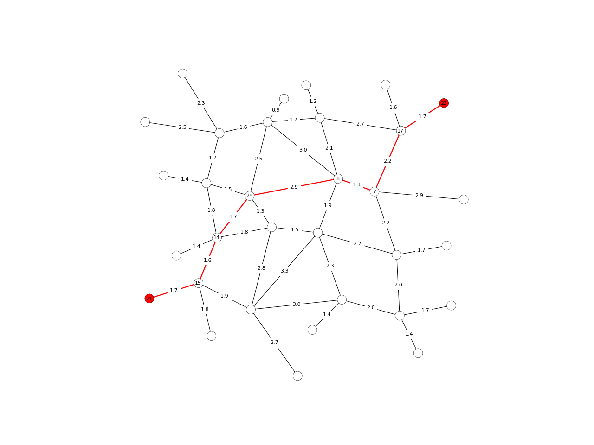
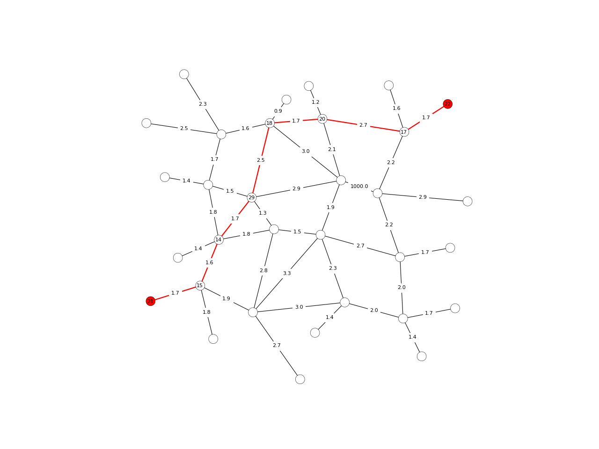

dijkstra_path
-
compas.topology.dijkstra_path(adjacency, weight, source, target, dist=None)[source] Find the shortest path between two vertices if the edge weights are not all the same.
- Parameters
adjacency (dict) – An adjacency dictionary. Each key represents a vertex and maps to a list of neighbouring vertex keys.
weight (dict) – A dictionary of edge weights.
source (str) – The start vertex.
target (str) – The end vertex.
- Returns
list – The shortest path.
Notes
The edge weights should all be positive. For a directed graph, set the weights of the reversed edges to
+inf. For an undirected graph, add the same weight for an edge in both directions.Examples
import compas from compas.datastructures import Network from compas.topology import dijkstra_path from compas.plotters import NetworkPlotter network = Network.from_obj(compas.get('grid_irregular.obj')) adjacency = {key: network.vertex_neighbours(key) for key in network.vertices()} weight = {(u, v): network.edge_length(u, v) for u, v in network.edges()} weight.update({(v, u): weight[(u, v)] for u, v in network.edges()}) start = 21 end = 22 path = dijkstra_path(adjacency, weight, start, end) edges = [] for i in range(len(path) - 1): u = path[i] v = path[i + 1] if v not in network.edge[u]: u, v = v, u edges.append([u, v]) plotter = NetworkPlotter(network) plotter.draw_vertices( text={key: key for key in path}, facecolor={key: '#ff0000' for key in (path[0], path[-1])}, radius=0.15 ) plotter.draw_edges( color={(u, v): '#ff0000' for u, v in edges}, width={(u, v): 2.0 for u, v in edges}, text={(u, v): '{:.1f}'.format(weight[(u, v)]) for u, v in network.edges()} ) plotter.show()
import compas from compas.datastructures import Network from compas.topology import dijkstra_path from compas.plotters import NetworkPlotter network = Network.from_obj(compas.get('grid_irregular.obj')) adjacency = {key: network.vertex_neighbours(key) for key in network.vertices()} weight = {(u, v): network.edge_length(u, v) for u, v in network.edges()} weight.update({(v, u): weight[(u, v)] for u, v in network.edges()}) weight[(8, 7)] = 1000 weight[(7, 8)] = 1000 start = 21 end = 22 path = dijkstra_path(adjacency, weight, start, end) edges = [] for i in range(len(path) - 1): u = path[i] v = path[i + 1] if v not in network.edge[u]: u, v = v, u edges.append([u, v]) plotter = NetworkPlotter(network) plotter.draw_vertices( text={key: key for key in path}, facecolor={key: '#ff0000' for key in (path[0], path[-1])}, radius=0.15 ) plotter.draw_edges( color={(u, v): '#ff0000' for u, v in edges}, width={(u, v): 2.0 for u, v in edges}, text={(u, v): '{:.1f}'.format(weight[(u, v)]) for u, v in network.edges()} ) plotter.show()
